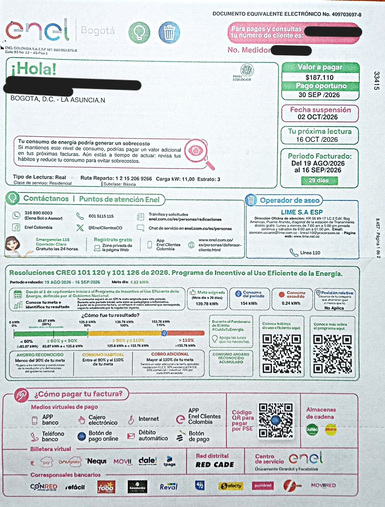
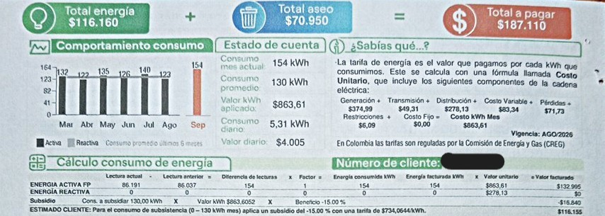

Factura.
Última factura registrada.:

Detalle de consumo y pago.
Historial de consumo de energía con mes, kWh y valor pagado.:

Comparación de la proyección mensual de consumo energético
Del consumo energético semanal analizado en la pagina equipos.html podemos proyectar el consumo mensual. Se evidencia que es necesario sumar más electrodomesticos que permitan llegar a conclusiones más precisas sobre los habitos de consumo de energía. La diferencia entre el consumo analizado y el consumo real viene determinado por la falta de mas datos de electrodomesticos con un consumo más alto y con mayor frecuencia de uso.
Recomendaciones de ahorro de consumo de energía:
- Disminución de tiempos de uso de las duchas electricas.
- Apagar la mayor cantidad de bombillos de luz, especialmente en zonas donde no sea necesario iluminar por la noche.
- Intentar disminuir el uso del Air Frier por la estufa de gas.